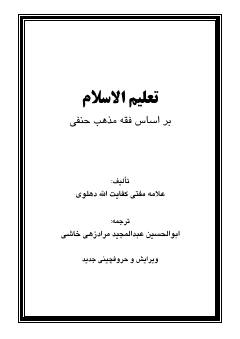

TUHanafiylik mazhabiga ko'ra islomiy ta'limot va amallar haqida qo'llanma.
Ushbu kitob hanafiylik mezhebi asosida islomiy e'tiqod, ibodat va ahkomlarni o'rgatuvchi qo'llanmadir. Unda tahorat, namoz, g'usl va boshqa diniy amallarga oid masalalar batafsil bayon etilgan.